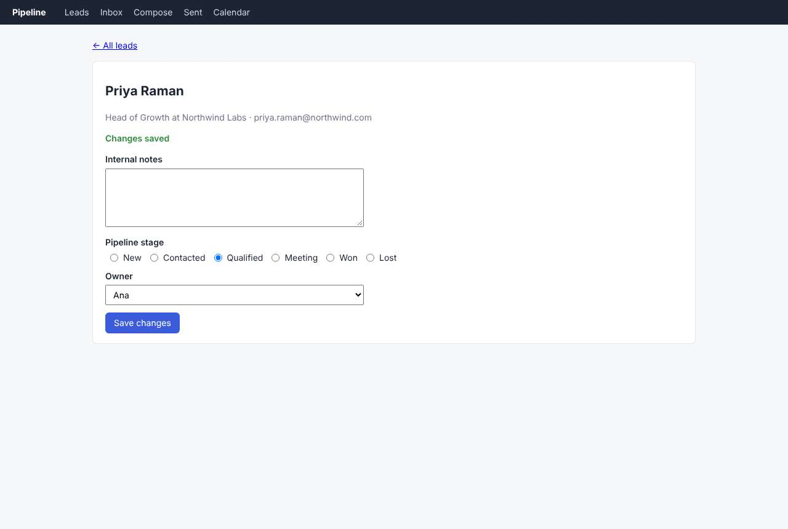

Dry run with stand-ins: the mechanics, before real model numbers
Same eleven tasks on the Pipeline test site, with pop-ups, slow loads, new tabs and re-sorting lists switched on.
Agent: scripted-baseline. Healer: scripted-healer (stand-in). "Correct" is the test site's own checker reading its
database; "verified" is autopilot's own check, which is all a real product would have. This page uses no model at all. The agent is the scripted macro and the healer is the scripted stand-in, so 'AI calls' counts the steps a model would have taken. It shows the mechanics work end to end; the real Gemini numbers will replace it.
01The four rows
| How it ran | Site | Correct | AI calls / run | Runs with no AI | Time / run | Verified |
|---|---|---|---|---|---|---|
| Agent every time | Site as recorded | 33/33 | 8.5 | 0/33 | 17s | – |
| Autopilot | Site as recorded | 33/33 | 0.0 | 33/33 | 6s | 33/33 |
| Agent every time | After a redesign | 6/33 | 4.1 | 0/33 | 8s | – |
| Autopilot | After a redesign | 33/33 | 0.2 | 30/33 | 6s | 33/33 |
02After the redesign, AI is used once, then never again
AI calls in each autopilot run on the changed site, in order. A blue box passed the task's checker. The first run heals and saves a new version; the next ones replay it for free.
| Workflow | Autopilot runs (AI calls each) | Agent every time (AI calls) |
|---|---|---|
| t01_qualify_priya | 200 | 2 per run, 0/3 correct |
| t02_assign_helix | 000 | 2 per run, 0/3 correct |
| t03_reply_pricing | 000 | 5 per run, 3/3 correct |
| t04_intro_quartz | 000 | 6 per run, 0/3 correct |
| t05_schedule_arcadia | 100 | 7 per run, 0/3 correct |
| t06_archive_newsletters | 000 | 7 per run, 3/3 correct |
| t07_lose_tomas | 200 | 2 per run, 0/3 correct |
| t08_oldest_contacted | 000 | 2 per run, 0/3 correct |
| t09_move_lumen | 000 | 4 per run, 0/3 correct |
| t10_note_q1 | 000 | 2 per run, 0/3 correct |
| t11_followups | 000 | 6 per run, 0/3 correct |
03One run, step by step
Move the lead Priya Raman (Northwind Labs) to the Qualified stage. On the redesigned site, with workflow v1. 2 AI calls; saved as v2.
- matched 'Next page' instead of 'Next' (label now 'Next page', same link)
- closed a pop-up that covered the page
- matched 'Next page' instead of 'Next' (label now 'Next page', same link)
- matched 'Next page' instead of 'Next' (label now 'Next page', same link)
- wasn't on that page any more; found it 1 page later
- AI: Click 'Qualified'
- matched 'Save changes' instead of 'Save' (label now 'Save changes', the page's only submit button)

04What changed in the redesign
- "Next" is "Next page", "Save" is "Save changes", "Save event" is "Update event", "To" is "Recipient", "Notes" is "Internal notes"
- Six new leads sort first, so most records are on a later page than when the workflow was recorded
- Stage is picked with a row of buttons instead of a dropdown
- The new-event form is hidden behind a "New event" button
The first two kinds are fixed for free (tolerant matching, paging further). The last two need AI once.